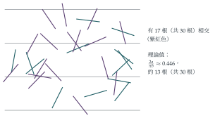

STEP I 1993，第 16 題
繼續之前，請先閱讀題目（原題為英文）。題目載於 STEP Support Programme 的題目資料庫： step.maths.org/questions/93-s1-q16
引子
把一根針拋到鋪有平行地板條的地板上。針橫跨板縫的機會竟然與 \(\pi\) 有關，儘管眼前根本沒有任何圓形。拋很多次並數一數橫跨板縫的次數，就可以用實驗來估算 \(\pi\)。這就是布豐投針問題（Buffon’s needle），由布豐伯爵喬治-路易·勒克萊爾（Georges-Louis Leclerc, Comte de Buffon）於 1733 年提出，並於 1777 年由他本人解決：它是幾何概率（geometric probability）的第一個問題，也是所有蒙地卡羅方法（Monte Carlo method）的始祖。
這個 \(\pi\) 來自角度：針的方向在半圈之內均勻分佈（uniform），把針橫跨平行線方向的「影子」長度對所有方向取平均，便得出因子 \(\frac2\pi\)。本題則以 \(\cos^{-1}\) 的積分來完成這個計算。
動筆之前
針的中心與最近一條直線的距離為 \(x\)，而針與這些直線的垂直線所成的角為 \(y\)。針朝着該直線能伸展多遠？
針的每一半長度為 \(a\)，它在垂直於直線方向上的分量是 \(a\cos y\)。因此，針與最近的直線相交，當且僅當 \(a\cos y \geq x\)。（由於 \(a < b\)，針不可能觸及其他直線。）
逐步解題
階段 1 積分
設 \(t = \cos y\)，當 \(t\) 由 \(0\) 變到 \(1\) 時，\(y = \cos^{-1}t\) 由 \(\frac\pi2\) 變到 \(0\)，而 \(\mathrm{d}t = -\sin y\,\mathrm{d}y\)。所以 \[\int_0^1\cos^{-1}t\,\mathrm{d}t = \int_0^{\pi/2}y\sin y\,\mathrm{d}y = \bigl[-y\cos y\bigr]_0^{\pi/2} + \int_0^{\pi/2}\cos y\,\mathrm{d}y = 0 + 1 = 1. \qed\] （或者：這個積分是 \(\cos^{-1}\) 的圖像與兩條坐標軸之間的面積，它等於 \(y = \cos x\) 由 \(0\) 到 \(\frac\pi2\) 的曲線下面積，兩者只是沿 \(y = x\) 反射而已。）
階段 2 給定位置
對於固定的 \(x\)，哪些角度 \(y\) 會使針與直線相交？這些角度的概率是多少？
若 \(x \geq a\)，針無法觸及直線。若 \(x < a\)，相交的條件是 \(\cos y \geq \frac xa\)，即 \(y \leq \cos^{-1}\frac xa\)。由於 \(Y\) 在 \([0, \frac\pi2]\) 上均勻分佈， \[\mathrm{P}(\text{相交} \mid X = x) = \frac{2}{\pi}\cos^{-1}\frac xa \qquad (0 \leq x < a). \qed\]
階段 3 對位置取平均
\(X\) 在 \([0, b]\) 上均勻分佈，其密度（density）為 \(\frac1b\)，所以 \[\mathrm{P}(\text{相交}) = \frac1b\int_0^a\frac2\pi\cos^{-1}\frac xa\,\mathrm{d}x = \frac{2a}{\pi b}\int_0^1\cos^{-1}t\,\mathrm{d}t = \frac{2a}{\pi b}, \qed\] 其中用了代換 \(x = at\)。
若針的長度恰好等於半間距（\(a = \frac{b}{2}\)，即針的長度 \(2a\) 等於 \(b\)），相交的概率是 \(\frac1\pi\)。要把 \(\pi\) 估算至小數點後兩位，你需要拋多少次？

回顧
兩個獨立的坐標。針的位置和角度互相獨立（independent）且均勻分佈，所以所求概率是一個二重積分（double integral），可以逐個變數計算。
先取條件，再求平均。先固定 \(x\)，對角度取平均；然後再對 \(x\) 取平均。
代換顯露出常數。以 \(x = at\) 作縮放，答案便化約為單一個通用的積分。
背後的數學
布豐的麵條
以下的方法幾乎不用計算就能看出答案。把針屈曲成任意形狀，成為一根「麵條」，並設 \(C\) 為它與直線相交的次數。根據期望值的線性（linearity of expectation），一條曲線相交次數的期望值，等於它各小段的期望值之和，所以與長度成正比：\(\mathrm{E}(C) = \kappa L\)，其中 \(\kappa\) 是某個常數。要求出 \(\kappa\)，可取麵條為一個直徑等於直線間距 \(2b\) 的圓：它總是恰好相交兩次，而其長度為 \(2\pi b\)。所以 \(\kappa \cdot 2\pi b = 2\)，得出 \(\kappa = \frac{1}{\pi b}\)。對於長度為 \(2a < 2b\) 的直針，它最多相交一次，故 \(\mathrm{P}(\text{相交}) = \mathrm{E}(C) = \frac{2a}{\pi b}\)。這個論證出自 Joseph-Émile Barbier（1860 年），是概率推理中的瑰寶：那個 \(\pi\) 來自用來校準常數的圓。
估算 \(\pi\)，以及錯誤示範
若拋出 \(n\) 根針，其中 \(c\) 根相交，則 \(\frac cn \approx \frac{2a}{\pi b}\)，而 \(\pi \approx \frac{2an}{bc}\)。誤差只會按 \(\frac{1}{\sqrt n}\) 的速度縮小，所以要把 \(\pi\) 算至小數點後三位，大約需要拋一百萬次。1901 年，意大利數學家 Mario Lazzarini 聲稱拋了 \(3408\) 次便得出 \(\pi \approx \frac{355}{113} = 3.1415929\ldots\)（準確至小數點後六位）。統計學家指出，這個結果好得令人難以置信：拋 \(3408\) 次，再配合一根精心挑選的針，恰好 \(1808\) 次相交便會得出 \(\frac{355}{113}\)，而只要在適當的時刻停止實驗，就能製造出這個結果。這是關於選擇性報告的經典警世故事。
布豐是一位博物學家，曾任巴黎皇家植物園園長，並著有一套 \(36\) 卷的自然史。他於 1733 年向法國科學院（Académie des Sciences）提出投針問題（以及一個使用方形地磚的版本，即「franc-carreau」遊戲），並於 1777 年發表解答。他的目的是要說明，概率中不單可以運用算術，也可以運用幾何。積分幾何（integral geometry）——研究隨機直線及其與曲線和曲面的交點的理論——正是由此發展而來，如今應用於體視學（stereology），即從二維切片估算三維結構（例如組織中的細胞）的大小和形狀的科學。
思維技巧
當結果取決於數個獨立的連續隨機變量時，一個事件的概率就是聯合密度（joint density）在該事件發生的區域上的積分。
在大學裏，這成為連續概率的基礎：聯合密度、邊際分佈（marginal distribution）和變數代換（change of variable），這些全都會在 第 12.21 節 和 第 12.22 節 再次出現。
延伸練習
長針。若 \(a > b\)，針可能與多於一條直線相交。證明相交次數的期望值仍然是 \(\frac{2a}{\pi b}\)。
麵條。把一根長度為 \(2a\) 的針屈成直角（兩臂各長 \(a\)）。相交次數的期望值是多少？
方形地磚。把一枚半徑為 \(r\) 的硬幣拋到鋪有邊長為 \(s > 2r\) 的方形地磚的地板上。求硬幣完全落在一塊地磚之內的概率。
Lazzarini 的針。設 \(a = \frac56b\)（使得 \(\frac{2a}{\pi b} = \frac{5}{3\pi}\)），證明拋 \(3408\) 次而有 \(1808\) 次相交，會給出估算值 \(\pi \approx \frac{355}{113}\)。
延伸閱讀
Daniel Klain & Gian-Carlo Rota, Introduction to Geometric Probability（Cambridge University Press），此書由布豐投針問題講起。
Lee Badger, “Lazzarini’s lucky approximation of \(\pi\)”，Mathematics Magazine 67 (1994)。一個可疑實驗背後的統計學。
Paul Nahin, Digital Dice（Princeton University Press）。以蒙地卡羅方法處理概率問題。